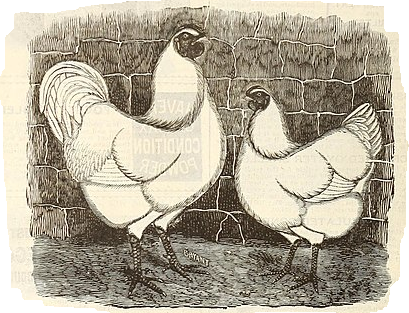

_BHL42592380.jpg){kind=link}

|
By Xenia, 2023-10-15 CW: IRL gore, a dead chicken, and Too Much Information  The other day on the farm, one of the chickens was killed by one of the foxes, I don't know why this was the case, but the fox did not eat much of the bird, IDK, maybe they were spooked by something. But in the morning the body was found; it looked like a massacre - and I was given the task of cleaning it up, as well as another guy who helped. Real nasty stuff. The whole body was pulled apart, the head was ripped off, the legs ripped off, just so much. Oh, and the guts. Just the guts. I'm very greatful that the body was not left out in the sun all that much or it would have stank to high heaven. I've dealt with dead birds before, like like dead doves (holy shit, dead dove do not eat??), but the times where I've done stuff like that, the body was all fine and in one peace, but not this time lol IDK if it bad or something, but I kind of did not care all that much, I just did it like it was a normal thing and put the body in a chicken feed bag. Working on a farm for a lot of my working life has kind of just made me numb to a lot of this kindof stuff. Oh well. Oh, and yeah, I know that I am a fox, but I amn way a wild one - get over yourself! Anyway, this is the first time that I am talking about the farm on this website, so it's kind of bad that it had to be about me cleaning up a dead chicken, whoops! But not everything on the farm is bad. For example, it's great that I get to not sit in an office chair for 8 hours everyday, so working out makes me all strong and stuff (I think men like buff women..? LOL) and it's so rewarding to know that I'm helping my family with their farmland :) Anyway, Xenia: Over and out! Copyright © Xenia . Some rights reserved. Please see humans.txt for full credits! Made for Onfim. Drawing of the chickens from here. |